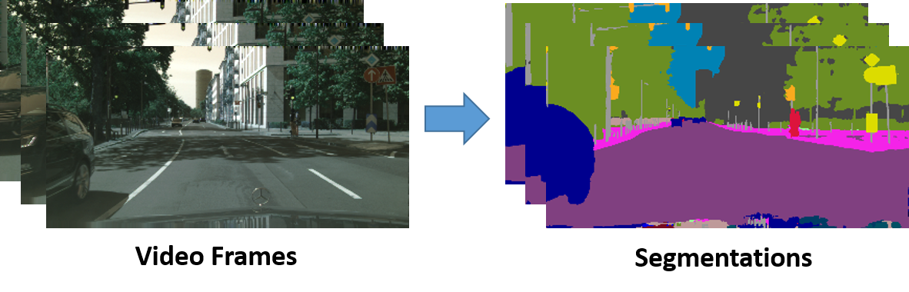
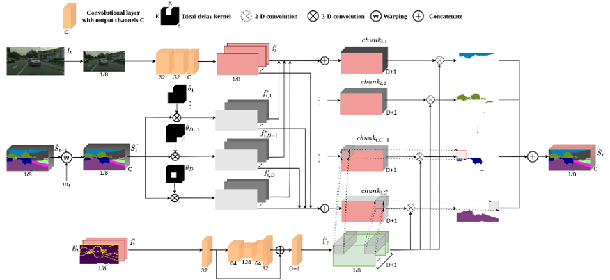
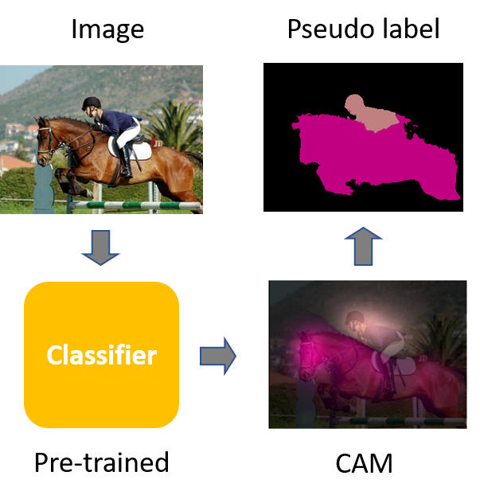
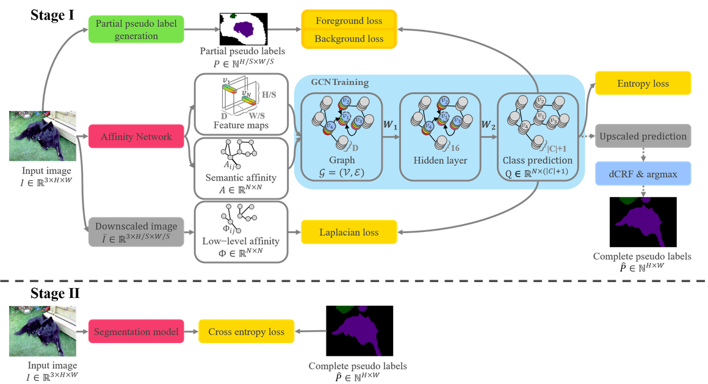
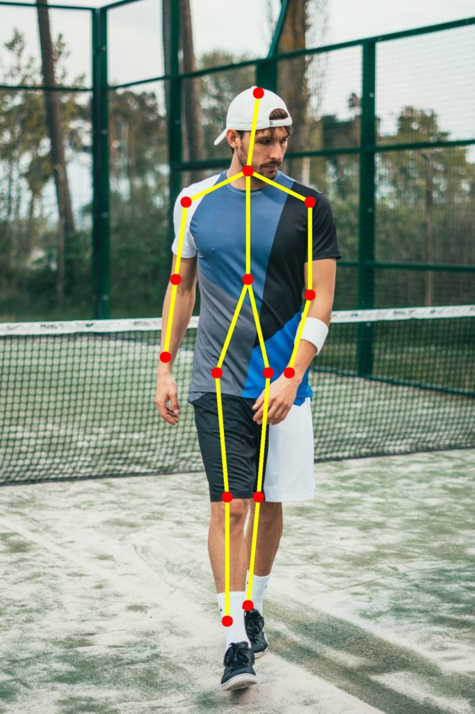
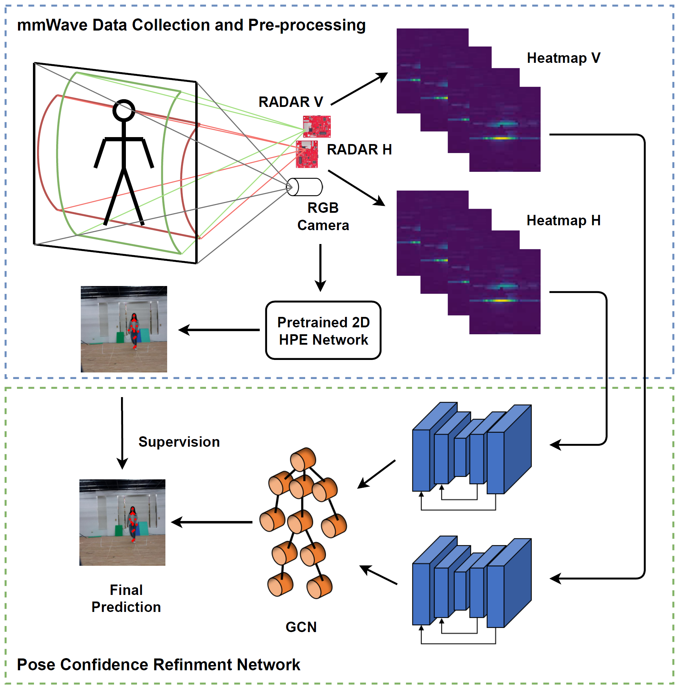
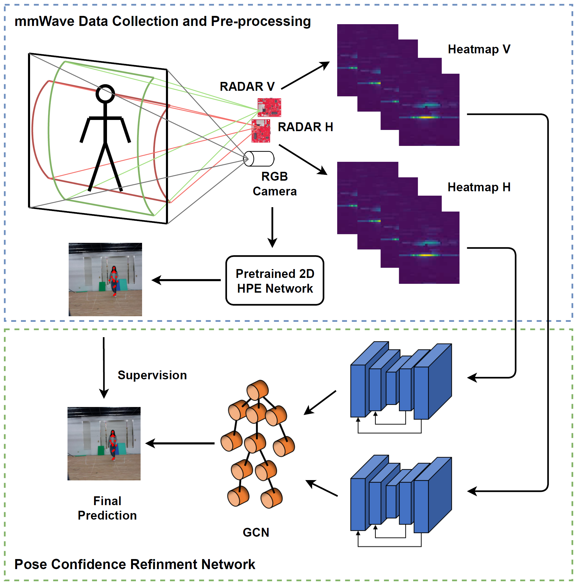
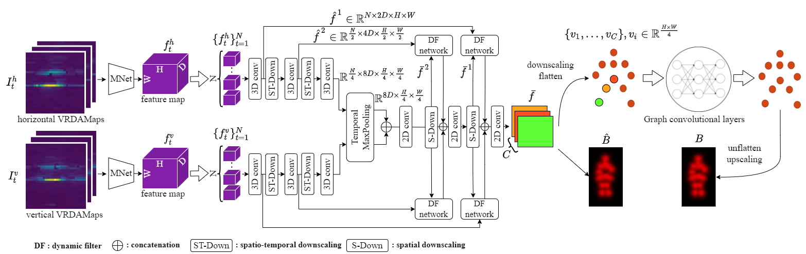

Shih-Po Lee (Robert)
I am currently pursuing my PhD degree in Northeastern University Khoury College of Computer Sciences, Boston, USA.
Computer Vision and Deep Learning are my areas of interest.
Feel free to contact me if you have any questions about me.


Education
 |
PhD of Khoury College of Computer Sciences, Northeastern University, Boston, USA
[September 2022 - present]
|
 |
Master of Science in Institute of Computer Science and Engineering, National Chiao Tung University (NCTU), Taiwan
[September 2018 - August 2020]
|
 |
Bachelor of Science in Computer Science and Engineering, National Sun Yat-sen University (NSYSU), Taiwan
[September 2014 - July 2018]
|
Experience
 |
Intern in Electrical & Computer Engineering at University of Washington, Seattle, USA
[September 2021 - March 2022]
|
|
Research Assistant of UW-NCTU AI Lab supported by University of Washington and National Chiao Tung University, Hsinchu, Taiwan
[August 2020 - August 2022]
|
 |
Teaching Assistant for MediaTek in-house AI training program, Hsinchu, Taiwan
[August 2019 - January 2020]
|
Research Interests
Video Semantic Segmentation

Video semantic segmentation aims at predicting semantic classes for every pixel in video frames.

GSVNet: Guided Spatially-Varying Convolution for Fast Semantic Segmentation on Video
IEEE International Conference on Multimedia and Expo (ICME), July 2021.
Weakly-Supervised Semantic Segmentation

Since pixel-wise annotations for image semantic segmentation are hard to obtain, weakly-supervised semantic segmentation adopts image-level classes to generate pseudo
sematic segmentation labels for training a segmentation network.

Weakly-Supervised Image Semantic Segmentation Using Graph Convolutional Networks
IEEE International Conference on Multimedia and Expo (ICME), July 2021.
Human Pose Estimation
 

Human pose estimation (HPE) is a widely studied task in computer vision. Given RGB images, a network predicts 2D/3D human skeletons.
The figure on the right illustrates a new application in HPE by using radar signals to predict keypoints.

Human Pose Estimation Using Millimeter Wave Radar
Publications
- S. P. Lee, S. C. Chen, and W. H. Peng, "GSVNet: Guided Spatially-Varying Convolution for Fast Semantic Segmentation on Video" IEEE International Conference on Multimedia and Expo (ICME), July 2021.
- S. Y. Pan, C. Y. Lu, S. P. Lee, and W. H. Peng, "Weakly-Supervised Image Semantic Segmentation Using Graph Convolutional Networks" IEEE International Conference on Multimedia and Expo (ICME), July 2021.